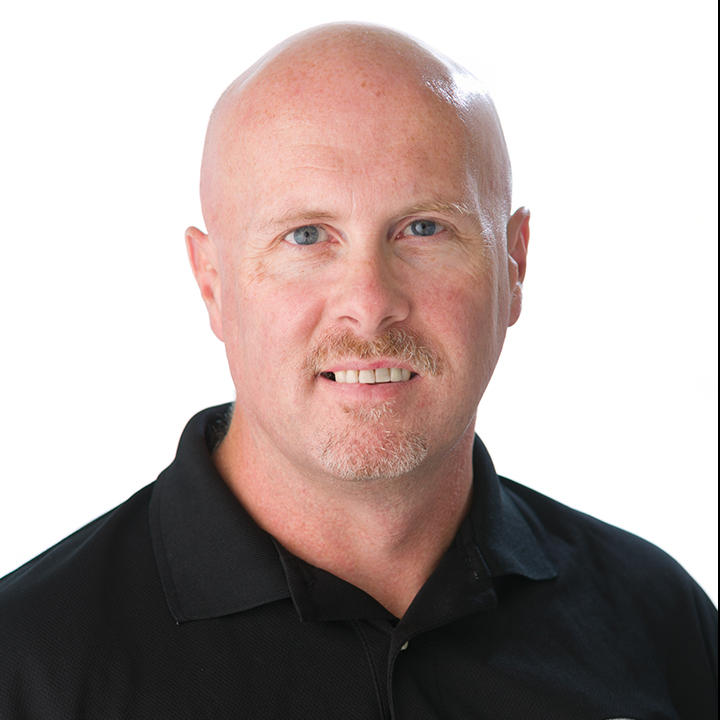

To serve physicians, scientists, and inventors within the medical community and enhance the quality of medical care by providing and agile development process that catapults new towards success and utilizes unconventional approaches to meet unment medical needs.
Ron holds a baccalaureates degree from Ottawa University in Health Services Management with a Minor in Business and served in the U.S. Army as a Combat Medical Specialist. Mr. Pirucki also supported Advanced Life Support transport activities at the Medical College of Ohio for the President George H. W. Bush Motorcade. Ron has two decades of experience in the medical device industry including integral roles at medical device start-ups EP Technologies, Cardiac Pathways, IntraLuminal Therapeutics, Onset Medical, and Direct Flow Medical. Mr. Pirucki has demonstrated consistent success in the specialties of Clinical, Sales, Marketing, Market Development and Business Development in Domestic, International and Global capacities.
Avijit has extensive leadership experience in the medical device industry having held management positions in large corporations such as Zimmer, Guidant, Edwards Lifesciences, ev3/Covidien and Terumo Medical. He has worked as Director of R&D at Onset Medical, developing low profile, large bore current and next generation access sheaths for cardiovascular and urological procedures. Mr. Mukherjee has an MBA and MS in Engineering and taught Project Management as an Associate Professor at the University of Missouri, St. Louis Graduate Business School. He has a successful track record of taking medical products from concept through design, development, prototyping, bench testing, pre-clinical and clinical trials, agency/regulatory approval, commercial launch and product lifecycle management.
Chris has 20 years of tangible results as CFO/COO coupled with P&L leadership for Fortune 500 companies such as Carrier Corporation (UTX) and Mesa Energy Systems (EME). He is a turnaround specialist with a broad working knowledge and experience in medical device, labor services, construction, consumer products, SAAS, and manufacturing verticals. Mr. O’Connor has held positions as Business Ethics Officer for over 1,000 employees across the US and won multiple national corporate role model and performance awards during his tenure at United Technologies. Well versed in M&A from due diligence to business integration, Chris also has supported multiple start-ups and mentors for UCI EMBA Program.
Steve has a baccalaureates degree from Southern Illinois University in Health Care Management and has 17 years of experience in the medical device industry including integral roles at medical device start-ups Cardiac Pathways and Onset Medical. In the military, Steve was an advisor to foreign governments at the ministry level for key infrastructure development in Eastern Europe. The U.S. Army presented Steve with the Humanitarian Award in 2012 for founding The Mountain Goats, a non-profit that serves soldiers suffering from PTSD. Mr. Redenbaugh is the recipient of a Bronze Star Medal and has served on the Medical Evaluation and Treatment Unit for President Clinton.
Michael is a serial entrepreneur and founder of FastStart.studio, a business incubator in Irvine, CA. Mr. Sawitz has been published nationally, been a keynote speaker nationally, and has been interviewed on numerous occasions in print and radio talk shows. His charity work includes President of the National Alliance of Ship Centers, board of directors Tech Coast Venture Network, board of directors The Center for Entrepreneurship CSUF, Professional Mentors Advisors and Coaches, and Charter Member of TIE - the world’s largest entrepreneurial education organization. Additionally, he teaches Lean Startup Strategies at CSUF as an adjunct professor.